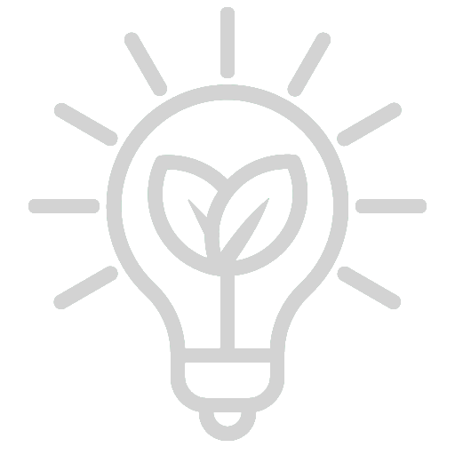

LA NASCITA DELL'AZIENDA
Da sogno a realtà. L'azienda nasce in un garage, come le altre più grandi compagnie note (e.g. Google, Apple, ecc) per poi crescere sino a diventare una grande compagnia con una sede dall'estensione di 6 km².
I NOSTRI IDEALI
La nostra azienda esiste anche per promuovere lo sviluppo scientifico, quello tecnologico e la ricerca necessari a permettere, un domani, all'uomo di andare a colonizzare nuovi pianeti. Tuttavia non stiamo trascurando la nostra amata Terra, pertanto usiamo quanta più energia pulita possibile per le nostre attività.
Energia pulita
Pannelli fotovoltaici
1 000 000 di pannelli fotovoltaici sono attualmente usati dalla nostra compagnia per alimentare gran parte delle strutture.
Fino a 4200 kWh di potenza erogata da ciascun pannello (in base all'orario del giorno e alla nitidezza del cielo).
Sino ad ora sono stati prodotti 131 400 TW di energia pulita grazie a questi moduli.
Sono stati salvati 3 400 000 alberi grazie ai nostri pannelli fotovoltaici.
Pale eoliche
30 000 pale eoliche sono attualmente usate dalla nostra compagnia per ricaricare mezzi di trasporto terrestri elettrici e le batterie per le strumentazioni spaziali.
Fino a 75 000 kWh di potenza erogata da ciascuna pala (in base all'intensità e la direzione del vento).
Sino ad ora sono stati prodotti 118 260 TW di energia pulita grazie a questi impianti eolici.
Sono stati salvati 3 060 000 alberi grazie alle nostre pale eoliche.